You Go First
A speculative dating-app concept built around scarcity, transparency, and portable trust. Fifteen picks a week. Three visible tiers. The signal is the product.

Premise & motivation
The dating-app industry is a $12B market with ~80% churn within ninety days. Every major product is a variation on one mechanic: infinite supply, zero-cost swiping, photo-first ranking. The incentives are misaligned — engagement equals revenue, so the platform profits when you don’t find someone. Users spend ~90 minutes a day swiping; ~75% of matches never exchange a single message.
YGF’s thesis is that the problem is economic, not cosmetic. If attention is infinite and free, no signal a user sends carries information. So YGF treats attention as a finite resource: every user gets the same fifteen picks every week, split across three visible tiers — five Firsts, five Seconds, five Thirds. Picks expire Saturday at 11:59 PM. A new roster lands Sunday at 7 PM. You can’t pay for more. When a slot costs something, the match that results from it means something.
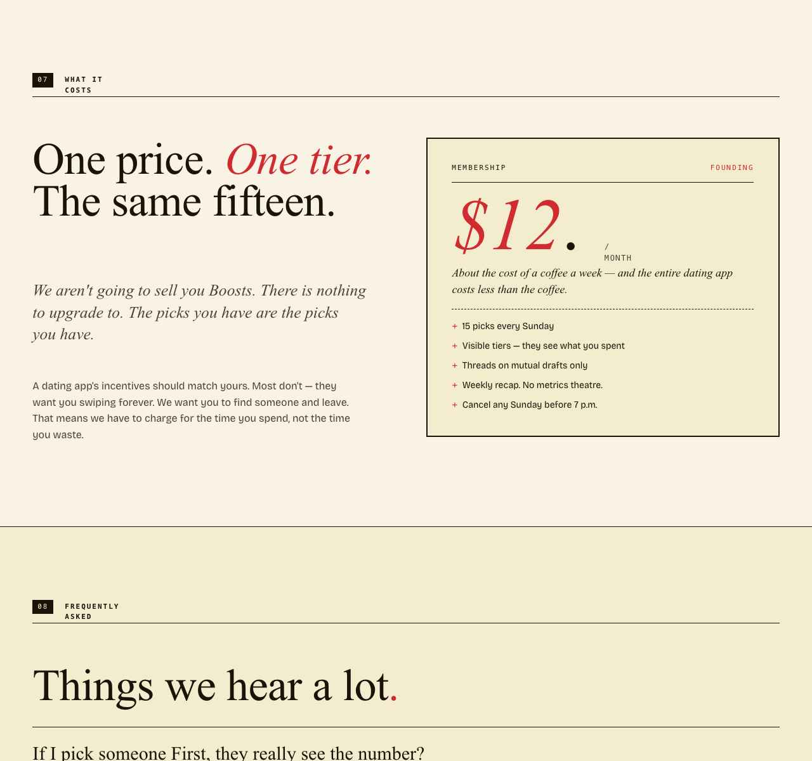
The mechanic is called Stratified Preference Allocation (SPA), and it diverges from conventional preference matching in three ways:
- Classical stable matching (Gale–Shapley) assumes a closed market, full information, and unlimited proposals. Real dating markets violate every one of those assumptions.
- App-style preference systems (Hinge, Tinder, Bumble) collapse the signal to a binary like — free to send, free to ignore. With no opportunity cost, a like carries no information. Hidden behind a paywall, it carries negative information.
- SPA makes the cost finite and visible. Finite via the fifteen-slot weekly roster. Visible via bilateral transparency — when you draft someone First, they see “You are one of her five Firsts this week.” No hidden likes. No paywalled superlikes. The signal is the product.
Three principles fall out of that:
- Strategic scarcity. Finite slots turn swiping into resource allocation. You can’t First everyone, so you have to choose. The revealed-preference signal is stronger than a like by orders of magnitude.
- Bilateral transparency. Recipients see exactly which tier you placed them in. Vulnerability is reciprocal by design.
- Portable trust & identity. Reputation and identity are decoupled from the platform — ATProto for identity plus a behavioral trust layer — so good behavior follows you across apps and there’s no lock-in.
How a week works
When you draft someone First, they see it. There are exactly five. There will never be six.
Seconds are visible to the people you spend them on, at the right cost.
Thirds are how you keep someone in mind without overcommitting.
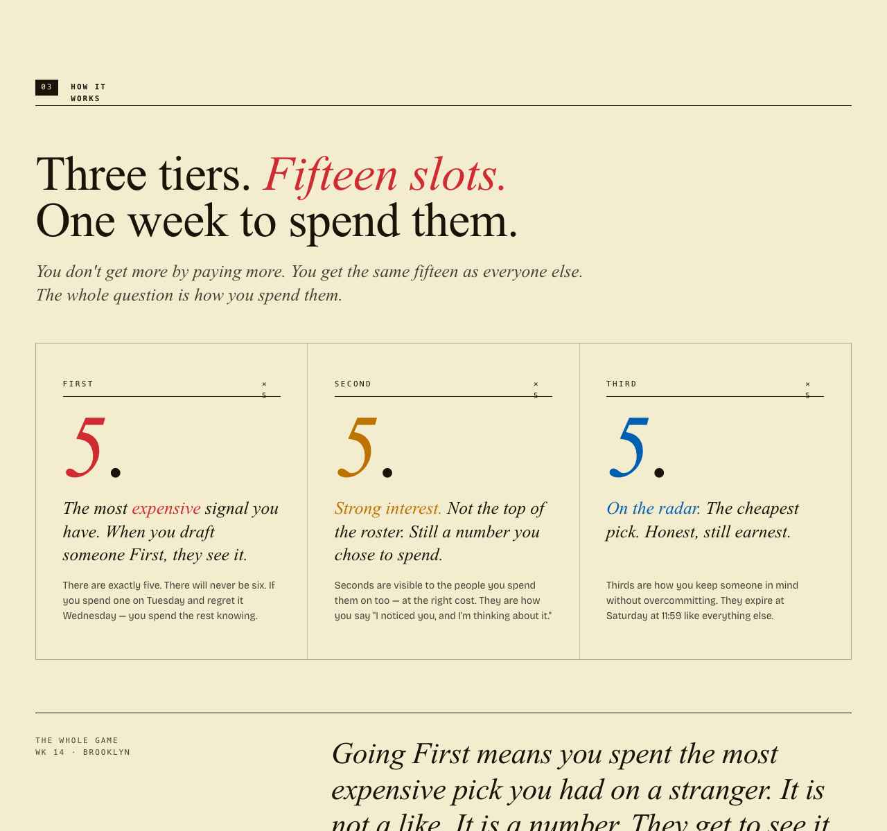
The cadence is a week. Picks drop Sunday at 7 PM. The roster locks Saturday at 11:59 PM. Between those two moments, you spend your fifteen — or you don’t.
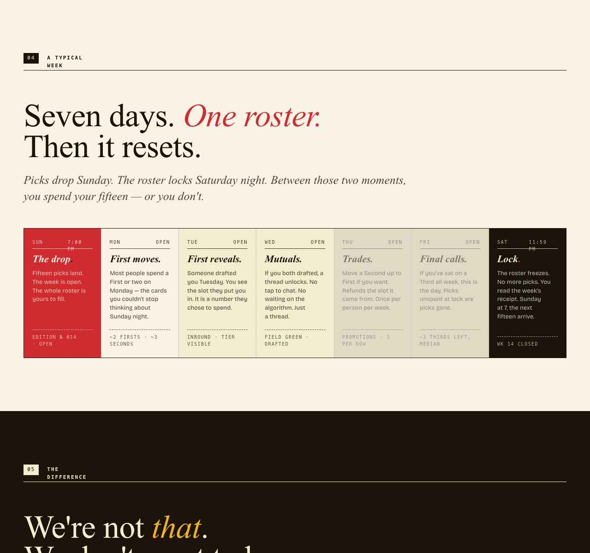
Design
YGF is deliberately anti–dating-app in look and feel. Most consumer dating products borrow from Spotify, Apple News, Dribbble, Steam — engagement-optimized tech surfaces. YGF leaves the category entirely and borrows from print.
| Source | Borrowed pattern |
|---|---|
| Sunday New York Times | Editorial mastheads, pull quotes, eyebrow labels |
| Old almanacs & specimen books | Ordinal numbering, asymmetric grids, dignified hierarchy |
| Magazine cover design | Display italics at billboard scale, generous whitespace |
| Newspaper sports section | Mono-numeric stats, agate type, terse data presentation |
Four signature design decisions carry the system:
- Old Standard TT italic at display scale, with a crimson period signing every wordmark and signal. The dot is the brand mark. A magazine-grade serif does most of the visual work without any chrome.
- A constrained chromatic palette — ink, pulp, cream, plus three signal colors (crimson = First, marigold = Second, cobalt = Third) and a field green reserved for mutual drafts. Each color has exactly one job. Crimson appears only in First-pick moments, which is what makes those moments matter.
- Duotone portraiture. Every photo runs through a tier-mapped duotone. Three problems solved at once: untinted photos read as Tinder, the treatment is the visual signature, and the tier travels with the person through the product.
- Editorial copy as system. Voice is documented in DO / DON’T cards in the brand bible alongside type and color specs. The voice is part of the product, not an afterthought.
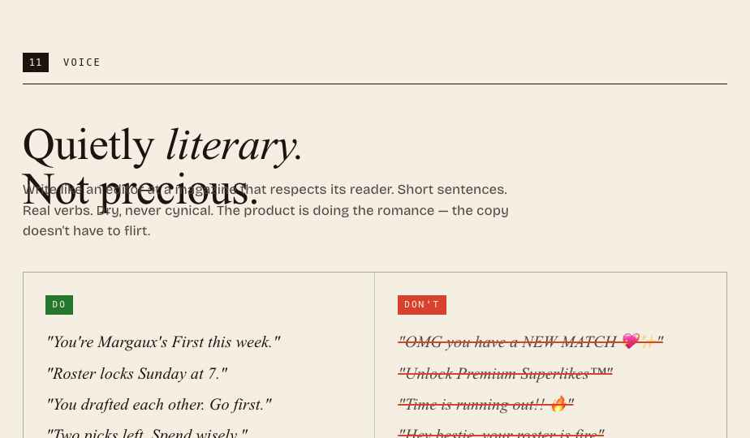
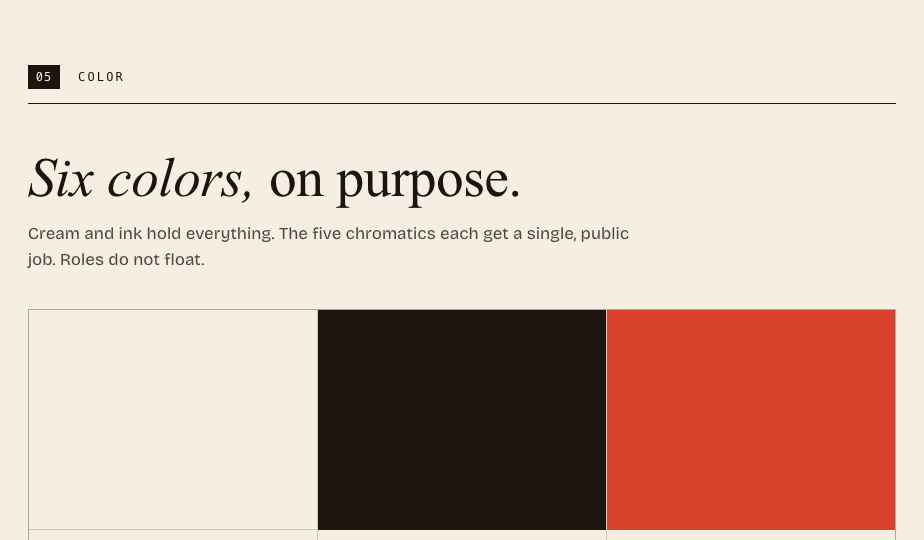
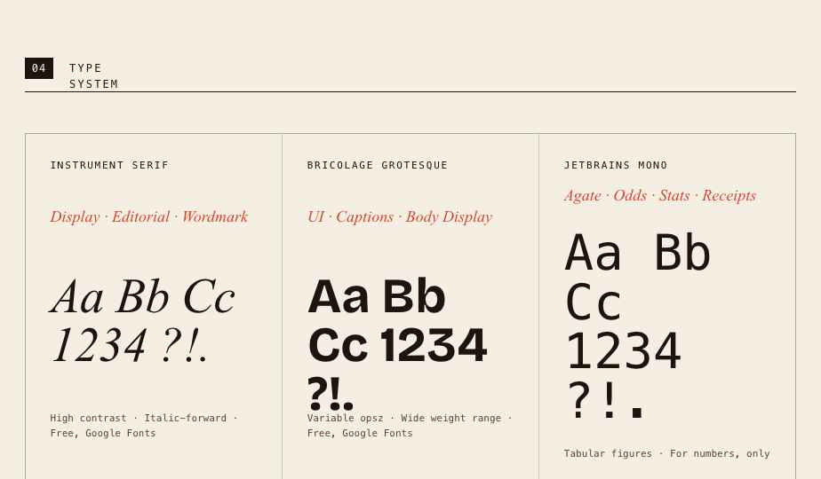
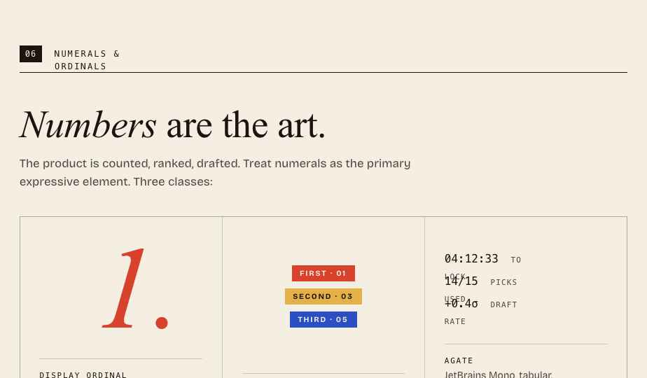
Two surfaces that carry the strategy
The List
A fourth verb beneath Pass / Third / Second / First, with a dashed-border treatment that telegraphs private, no cost. Unlimited. The person you parked never sees it. The pressure isn’t the in-the-moment choice — it’s the Saturday lock.
This is the verb for “I don’t know yet, I want to think about it,” which is the most honest response anyone has to most cards.
The Night Round
A 9 PM → midnight synchronous window, signaled by a pulsing crimson banner and a city-wide push notification. Inside, you can send up to ten multiple-choice questions to people you’ve considered but not yet picked. They tap one of four answers.
No conversation. No chat affordance anywhere. The constraint is the feature — synchronicity, borrowed from BeReal, applied to dating.
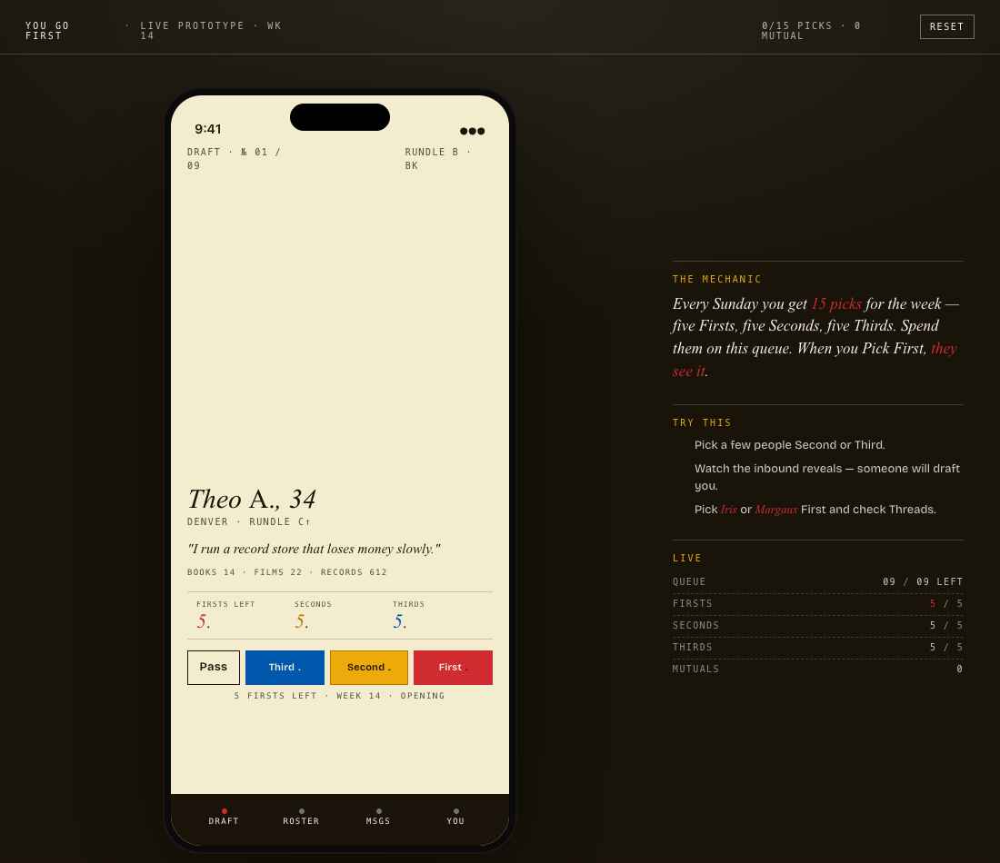
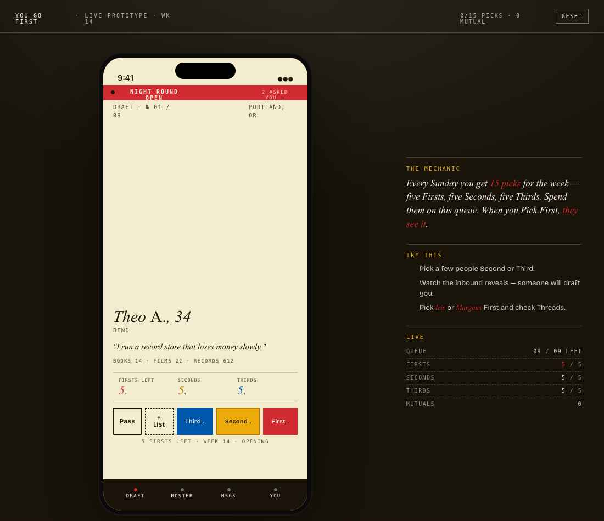
Mechanics & implementation
The interesting engineering is the matching engine, which is asymmetric by design — your score for someone differs from theirs for you.
- Relay assessment — a behavioral quiz produces ten vertex scores (Reach↔Retreat, Voice↔Quiet, Spark↔Steady, Merge↔Orbit, Heat↔Cool), normalized into a single Temperature score on a 0–80°R scale (e.g.
64.7°R). The integer is public; the decimal is a private hash used only by the algorithm. - Plinko priorities — users allocate exactly ten chips across five traits (attractiveness, liveliness, curiosity, kindness, adaptability). This captures what you want, is locked permanently, and is never shown publicly.
- Score —
matchScore = 0.7 × plinkoAlignment + 0.3 × tempCompatibility, where alignment maps your wants onto their derived traits and temperature rewards similar operating styles.
Supporting systems
- The Roster. Fifteen visible slots arranged as three rows of five (Firsts / Seconds / Thirds), plus the unlimited private List. The Roster locks Saturday at 11:59 PM. Sunday at 7 PM, a new one lands.
- Stratified visibility. Under-the-hood tiering recalibrated every fourteen days based on match success, within ~100-mile geographic regions so a small-market user isn’t ranked against a metro. Never surfaced in the UI — no letter grades, no public ladder, nothing on profiles. The math runs; the user never feels ranked.
- Behavioral ranking. Ghosting, unmatch rate, and report rate degrade roster access; consistent quality interactions improve it. Ranking points decay over fifty-two weeks to prevent indefinite coasting.
- Draft picks. Selective cross-tier visibility that lets the engine surface someone outside your usual slice when compatibility is unusually high.
- Safety & trust. Reporting, response-rate tracking, and ghosting detection feed a portable reputation layer that survives if a user moves between SPA-compatible apps.
YGF also includes a research artifact: a simulator and writeup analyzing the SPA system — attention-inequality metrics (Gini ~0.42), match-quality convergence over twelve weeks, behavior under continuous market churn, local-stability analysis. The design choices are backed by analysis.
The system, on a phone
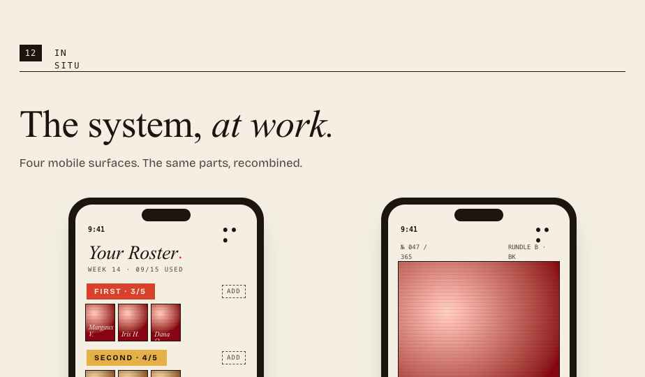
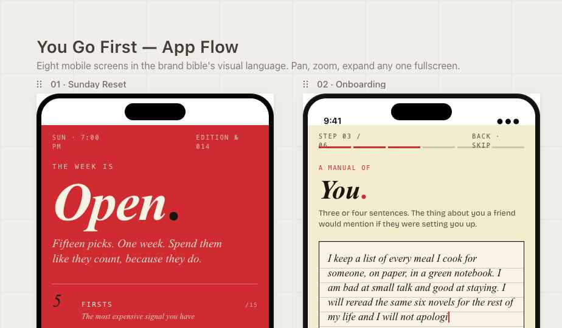

Voice
Voice is treated as a product spec, not flavor. The brand bible documents it the same way it documents type and color.
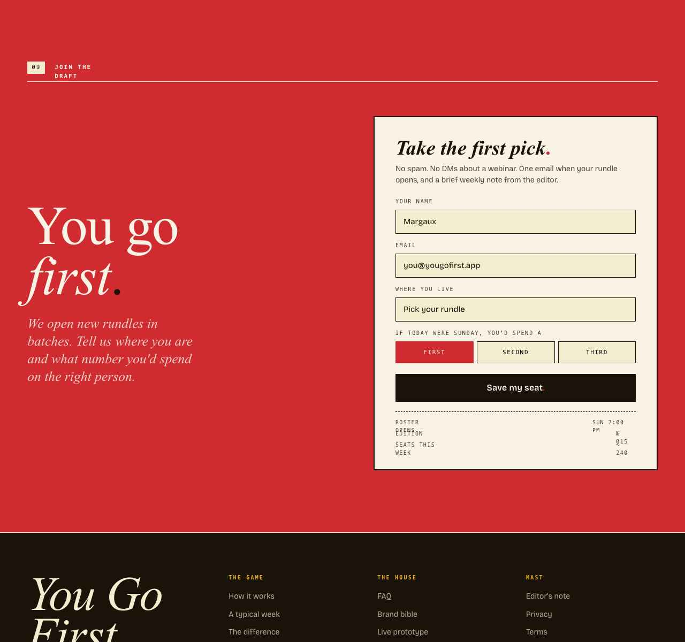
The opposite of every other app
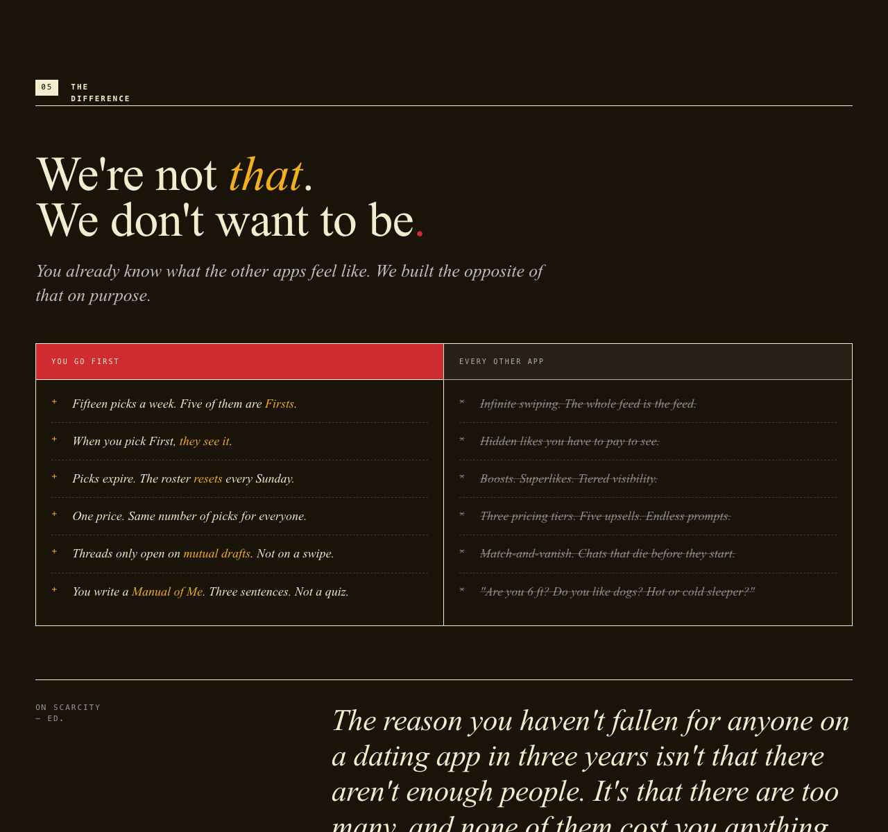
What it costs

The five artifacts
The product surfaces as five connected pieces, each shippable on its own.
- Brand Bible. A thirteen-section specimen book covering wordmark, type, color, voice, portrait treatment, the Roster, profile cards, and DO / DON’T copy samples. Written like a printed manual.
- App Screens. Eight hi-fi mobile screens covering one week of use, from the Sunday Reset to the Saturday Recap, presented on a pan/zoom canvas.
- Interactive Prototype. The full matching mechanic, playable end-to-end. Draft Pass / List / Third / Second / First, watch scripted inbound reveals land, hit a mutual, open a thread, send a message, and trigger the Night Round to send multiple-choice questions with AI-suggested options.
- Marketing Site. A nine-section editorial landing page with a working waitlist form.
- Strategy Deck. Twelve slides arguing the product, from the market problem to GTM (Portland → Vancouver, WA → Seattle) to projected milestones.
Built solo, end-to-end: protocol design, product strategy, UX, brand, copy, deck.
Stack
- App
- React 18 + TypeScript, Vite, Tailwind + shadcn/ui, React Query, React Router, deployed as a PWA.
- Backend
- Supabase (Postgres 15, Deno edge functions, Realtime, Storage) with row-level security.
- Identity
- ATProto OAuth — profile data lives in the user’s own PDS.
- Trust layer
- Cross-app reputation, shared moderation, and SPA delegated to Glowrm — the trust infrastructure layer YGF was designed against.
- Type
- Old Standard TT, Bricolage Grotesque, JetBrains Mono.
- Hosting
- Vercel.
Status
YGF is a portfolio piece and the blueprint for a hypothetical funded build. The matching engine, prototype, brand bible, app screens, marketing site, and strategy deck all ship. Production infrastructure (Sentry, cron jobs, SLAs, mobile apps) sits in the roadmap.
- Trust layer
- YGF’s portable reputation, ghosting detection, response-rate tracking, and global ban behavior all run through Glowrm — one of three reference implementations of that API.